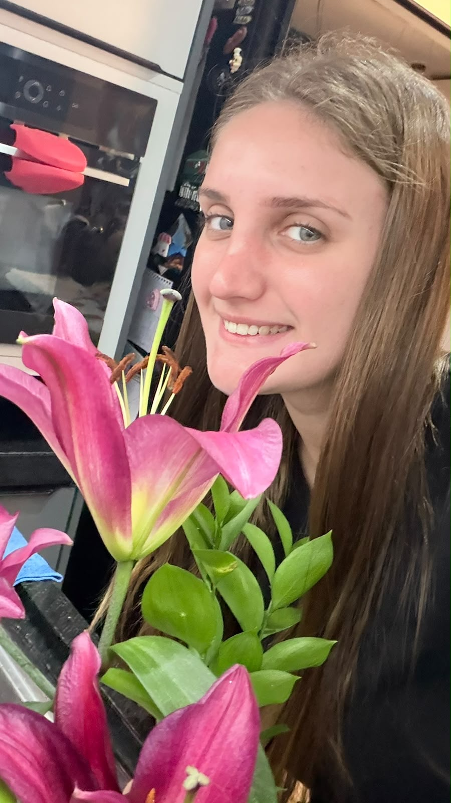
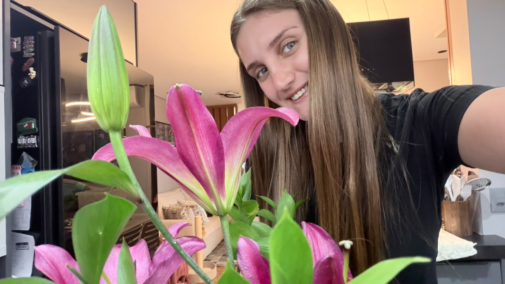

Cuide da Flor
Algumas coisas precisam de cuidado para florescer.
A memória floresceu.
Existe um momento muito específico na vida em que algo simples deixa de ser apenas um objeto e passa a carregar um pedaço inteiro do coração de alguém. Foi exatamente isso que aconteceu naquele dia em que eu segurei aquela flor nas mãos. Talvez, para qualquer outra pessoa, ela fosse apenas um lírio rosa. Bonito, delicado, perfumado. Mas, para mim, ela já era muito mais do que isso antes mesmo de chegar até você.
Eu sabia o quanto você amava lírios. Sabia que, entre tantas flores espalhadas pelo mundo, eram justamente eles que faziam seus olhos brilharem de um jeito diferente. E foi então que eu percebi que aquela não seria apenas a primeira flor que eu te entregaria. Ela carregava um significado que nenhuma palavra conseguiria explicar completamente.
Naquele instante, eu não estava apenas oferecendo uma flor.
Eu estava entregando um pedaço daquilo que eu sentia por você.
Porque flores vivem pouco. Elas desabrocham, perfumam o ambiente, encantam quem as observa... e, inevitavelmente, um dia suas pétalas caem. Mas eu queria acreditar que existia algo que pudesse durar muito mais do que qualquer jardim. Eu queria que, sempre que você olhasse para um lírio rosa, lembrasse daquele momento. Lembrasse de nós. Lembrasse de como um gesto tão pequeno podia esconder um sentimento tão grande.
E talvez seja justamente isso que torna algumas lembranças eternas. Não é o tamanho do presente. Não é o preço. Não é o lugar onde aconteceu. É a intenção que fica guardada para sempre.
Porque eu poderia ter escolhido qualquer outra coisa. Poderia ter dado qualquer outro presente. Mas, no fundo, eu só queria ver aquele sorriso aparecer no seu rosto quando você percebesse que alguém prestou atenção em um detalhe que talvez muita gente nunca tivesse percebido: o quanto você ama lírios.
Desde aquele dia, essa flor deixou de ser apenas uma flor.
Ela virou símbolo.
Símbolo do começo.
Do cuidado.
Da vontade de fazer você feliz, mesmo nas coisas mais simples.
E sabe... às vezes eu penso que a gente se parece um pouco com um jardim. Nada floresce de um dia para o outro. Existe tempo. Existe dedicação. Existem dias de chuva, dias de sol e dias em que parece que nada está acontecendo. Mas, mesmo quando não percebemos, as raízes continuam crescendo em silêncio.
Foi exatamente assim com a gente.
Sem pressa.
Sem precisar forçar nada.
Cada conversa.
Cada risada.
Cada abraço.
Cada momento vivido foi como uma pequena gota de água alimentando algo que, aos poucos, criava raízes dentro de mim.
E hoje eu entendo que aquela primeira flor nunca foi sobre pétalas.
Ela era uma promessa silenciosa.
A promessa de continuar escolhendo você todos os dias.
De continuar encontrando motivos para colocar um sorriso no seu rosto.
De continuar cuidando daquilo que nós estamos construindo, exatamente da mesma forma que se cuida da flor mais bonita de um jardim.
Porque algumas pessoas recebem flores.
Você...
me ensinou o significado delas.
E se um dia todas aquelas pétalas desaparecerem, se o tempo levar embora sua cor e seu perfume, ainda assim existirá algo que nunca poderá ser arrancado.
A lembrança daquele momento.
Do primeiro lírio.
Do primeiro "eu pensei em você".
Do primeiro gesto que carregava, escondido entre as pétalas...
um amor que ainda estava aprendendo a encontrar as palavras certas.
Porque, no fim...
não foi apenas a primeira flor que eu te dei.
Foi a primeira de muitas maneiras que encontrei para dizer, sem precisar falar...
"EU TE AMO MUITO."

